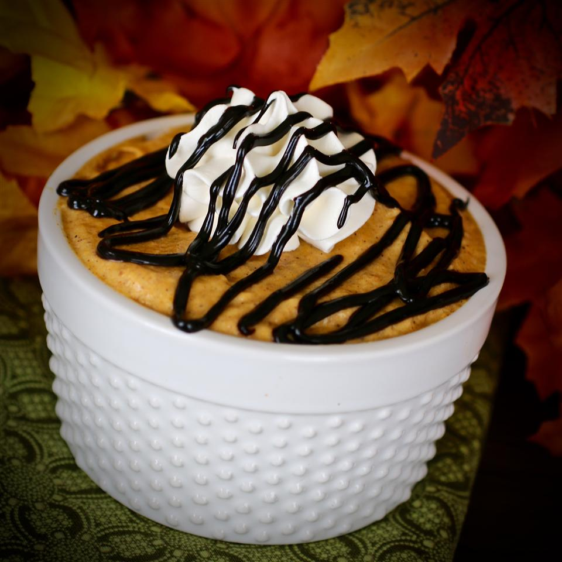

Sarah's Applesauce

Description
If you want to stay on your diet this is a terrific crustless pumpkin pie recipe you will love.
Ingredients
- 1 (15 ounce) can pumpkin puree
- 1/2 cup skim milk
- 1 (1 ounce) package instant sugar-free vanilla pudding mix
- 1 teaspoon pumpkin pie spice
- 1 (8 ounce) container fat free frozen whipped topping
Steps
- In a medium bowl, mix together the pumpkin, milk, and instant pudding mix.
- Stir in the pumpkin pie spice, and fold in half of the whipped topping.
- Pour into an 8-inch pie plate, and spread remaining whipped topping over the top
- Chill for 1 hour, or until set